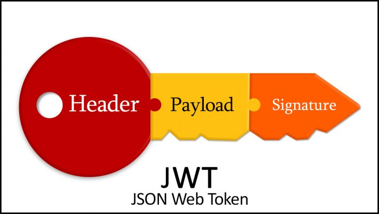
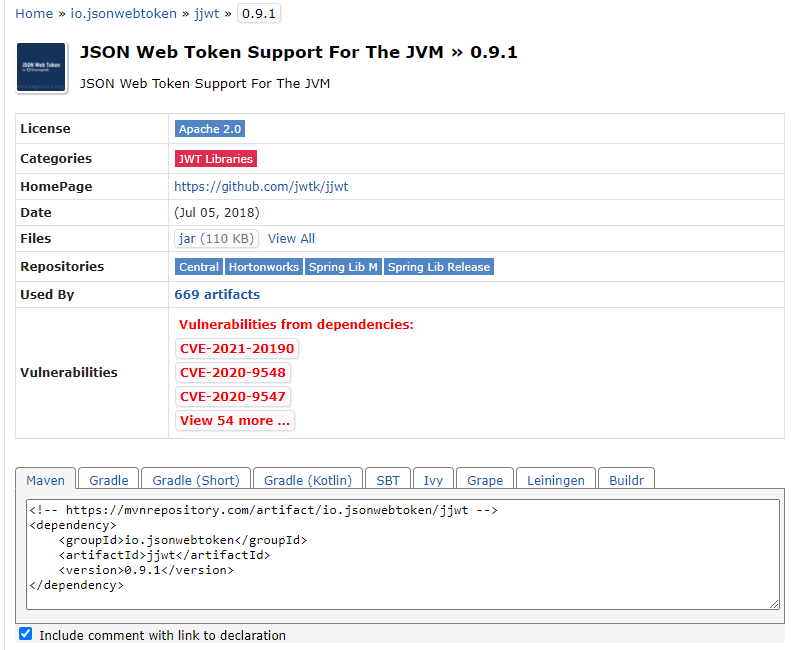
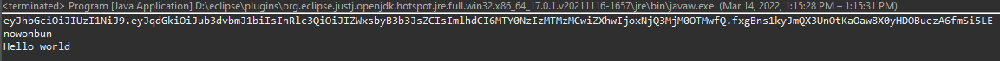
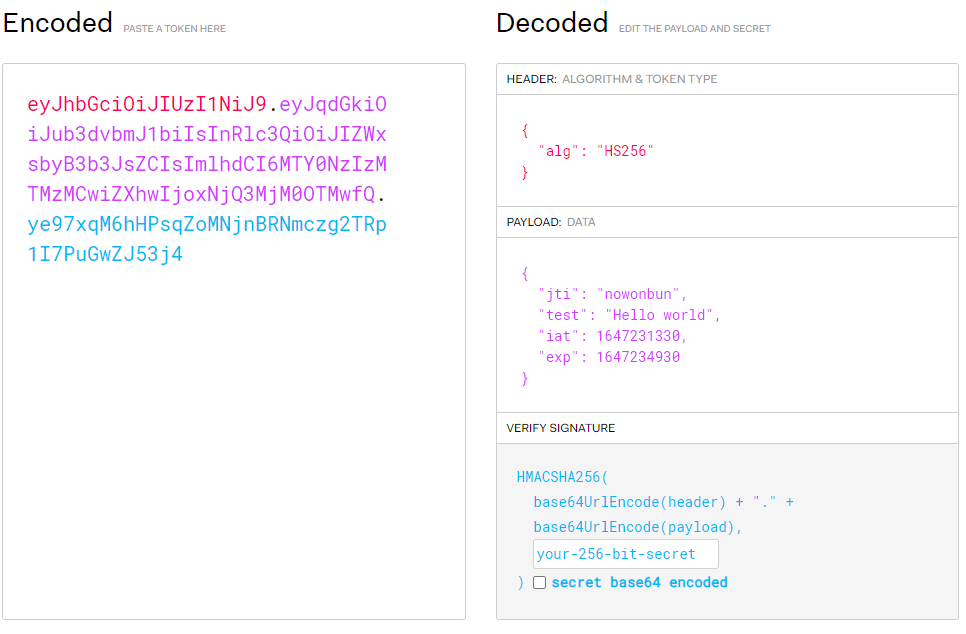
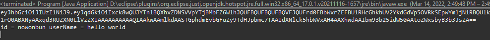
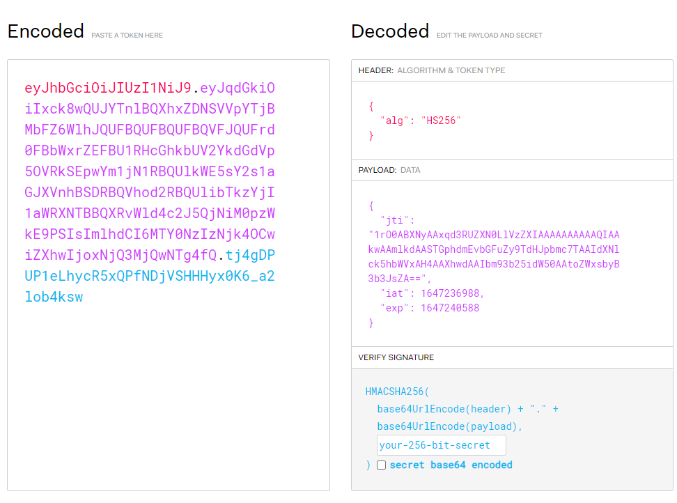

[Java] JWT(Json Web Token)を発行、確認する方法
こんにちは。明月です。
この投稿はJavaでJWT(Json Web Token)を発行、確認する方法に関する説明です。
私は今までウェブ環境でログイン、ログアウト機能を作成する時、普通セッションを利用する方法でログイン、ログアウトを使いました。実は最近までそのように使いました。
セッションを利用して情報を扱ってもクッキーのセッションIDを奪われたらセキュリティで問題があることは同じですが、私が知る限り、一番よく使う認証方法ではないかと思いますね。
最近、プロジェクトスタイルがマイクロサービスアーキテクチャでモジュール別にサーバーを分割するか大容量トラフィックに合わせてウェブサーバーロードバランシングで複数のサーバーにトラフィック分散形式で構成をします。
その場合、問題はログインセッションをどのように構成することでしょう。解決する方法では一つのセッションサーバーを構成してRedisデータベースを置いて各サーバーでセッションチェックすることで対応することが可能でしょう。
それでも欠点があり、マイクロサービスでウェブサーバーを極端的に分割すればセッションサーバーに負荷になるし、様々な問題が発生する可能性があります。
実は私の場合はその状況でJWTを使ったことではなく、プロントエンドとサーバーサイドの作業を分離するところでセキュリティを考える場合、もっと効果的にログイン管理機能を使う方法がないと思うところでJWTということを知ることになりました。
リンク - https://jwt.io/introduction
JWTの機能を理解することで時間が少しかかりました。考えれば凄く単純な論理式ですが、ログイン情報をサーバーに置かないという固定観念のせいで、この方式がセキュリティで有効かとずっと悩みました。
実は認証だけできると思えばその情報をサーバーのセッションに置く理由がないですが。。思えば今まで何でそんなに非効率的にログイン情報をセッションに置いたかと思われますね。

Reference - https://ansibytecode.com/jwt-peek-into-the-jargon-java-web-token/
JWTは上のイメージみたいに「XXXXX.XXXXX.XXXXX」の構造になっています。
まず、Headerはトークンタイプやアルゴリズム情報に関して設定されています。
そしてPayloadはセッションみたいに使う情報があります。もちろん、Payloadはユーザ情報があればNGですね。名前とIDごろは良いですが、パスワードや個人情報があれば奪われる可能性があります。
最後、Signatureはトークン情報が合ってるかどうかの確認するコードがあります。
つまり、任意で変調して使うことができないようにしたことです。
こんな機能を利用するとクッキーにSESSION-IDを入れてセッションを利用してログインしたかどうかを確認する必要がないでしょう。
つまり、単純にJWTでこのトークンは我々のサービスで使うトークンかを確認できるし、もっとセキュリティ的に強化したいなら、発行する時にSignatureをRedisのデータベースに格納して正確なログイン可否を判別することがよいでしょう。
JWTについてJavaでどのようにTokenを生成するか、そしてその値が合ってるかどうかの確認するような方法に関して説明します。
実はこのJWTはWeb環境で使うことですが、ウェブ環境の設定する部分と混ぜて説明すると複雑になるので、単純にコンソールで発行、比較することを説明してそれをログインとweb-filterに代わりに使ったら良いではないかと思います。
まず、JavaでJWTを使うためにはmavenでライブラリを一つ連結しなければならないです。
リンク - https://mvnrepository.com/artifact/io.jsonwebtoken/jjwt/0.9.1

<dependencies>
<dependency>
<groupId>io.jsonwebtoken</groupId>
<artifactId>jjwt</artifactId>
<version>0.9.1</version>
</dependency>
<dependency>
<groupId>javax.xml.bind</groupId>
<artifactId>jaxb-api</artifactId>
<version>2.1</version>
</dependency>
</dependencies>
私が上のソースでjavax.xml.bindも追加しましたが、これがxmlを分析、生成するライブラリです。Web環境ではそれを宣言しなくてもwebライブラリに含ませているライブラリですが、コンソールには別にxmlを分析するライブラリがないので、依存性で宣言しました。
package jwtTest;
import java.util.Date;
import io.jsonwebtoken.Claims;
import io.jsonwebtoken.Jws;
import io.jsonwebtoken.Jwts;
import io.jsonwebtoken.SignatureAlgorithm;
import io.jsonwebtoken.SignatureException;
// main関数があるクラス
public class Program {
// 暗号化するためにキー
private static String SECRET_KEY = "secret";
// JWTの満了時間 - 1時間
private static long tokenValidMilisecond = 1000L * 60 * 60;
// 実行関数
public static void main(String[] args) {
// Programインスタンス生成
var p = new Program();
// JWTトークン生成 - idはnowonbun
var token = p.createToken("nowonbun");
// コンソール出力
System.out.println(token);
// JWTトークンの復号化
var claims = p.getClaims(token);
// JWTトークン検証
if (claims != null && p.validateToken(claims)) {
// idを取得する。
var id = p.getKey(claims);
// Payload値のtestキーの値を取得
var test = p.getClaims(claims, "test");
// コンソール出力
System.out.println(id);
System.out.println(test);
} else {
// トークンの整合性が合わなかったら
System.out.println("error");
}
}
// トークン生成関数
public String createToken(String key) {
// Claimsを生成
var claims = Jwts.claims().setId(key);
// Payloadデータ追加
claims.put("test", "Hello world");
// 現在時間
Date now = new Date();
// JWTトークンを生成する。Payload情報と生成時間、満了時間、アルゴリズム終了と暗号化キーを入れて暗号化する。
return Jwts.builder()
.setClaims(claims)
.setIssuedAt(now)
.setExpiration(new Date(now.getTime() + tokenValidMilisecond))
.signWith(SignatureAlgorithm.HS256, SECRET_KEY)
.compact();
}
// Stringになっているコードを復号化する。
public Jws<Claims> getClaims(String jwt) {
try {
// 暗号化キーで復号化する。
// つまり、暗号化キーが違いならエラーが発生する。
return Jwts.parser()
.setSigningKey(SECRET_KEY)
.parseClaimsJws(jwt);
}catch(SignatureException e) {
return null;
}
}
// トークン検証関数
public boolean validateToken(Jws<Claims> claims) {
// トークン満了時間が現在時間を過ぎたかを検証
return !claims.getBody()
.getExpiration()
.before(new Date());
}
// トークンを通ってPayloadのIDを取得
public String getKey(Jws<Claims> claims) {
// Id取得
return claims.getBody()
.getId();
}
// トークンを通ってPayloadのデータを取得
public Object getClaims(Jws<Claims> claims, String key) {
// データ取得
return claims.getBody()
.get(key);
}
}

まず、JWT暗号化するところでSECRET_KEYということが必要です。このSECRET_KEYというのは固有の暗号化キーでSECRET_KEYが別のPCから暗号化したトークンデータを持っていれば検証するところでエラーが発生します。
つまり、SECRET_KEYだけ奪われなかったらTOKENキーをセキュリティで使うことです。
このトークンを持って、復号化をします。
リンク - https://jwt.io

jwtサイトで復号化したら我々が入れたデータが表示されます。最後にSignature検証はSECRET_KEYを我々だけ知っているので正しいかどうかの検査はプログラムだけで確認できます。
ここまでがJWTトークンを作成して検証する部分です。
でも、これをこのままに使うことでは少し危険性があります。なぜならPayload値がそのままに見えるからです。
我々がログイン情報をセッションに入れる時には単純にIDだけ格納することではなく、ユーザ情報も入れる場合があります。つまり、凄く機密な情報を格納することは危険性がありますが、簡単な情報は入れたいですね。
でも、Payloadの値は上のサイトで復号化になるので、もっと暗号化が必要です。
package jwtTest;
import java.io.ByteArrayInputStream;
import java.io.ByteArrayOutputStream;
import java.io.ObjectInputStream;
import java.io.ObjectOutputStream;
import java.io.Serializable;
import java.util.Base64;
import java.util.Date;
import io.jsonwebtoken.Claims;
import io.jsonwebtoken.Jws;
import io.jsonwebtoken.Jwts;
import io.jsonwebtoken.SignatureAlgorithm;
import io.jsonwebtoken.SignatureException;
// Userクラス(シリアルのインターフェイス継承)
class User implements Serializable {
private static final long serialVersionUID = 1L;
// メンバー変数
private String id;
private String userName;
// setter
public void setId(String id) {
this.id = id;
}
public void setUserName(String userName) {
this.userName = userName;
}
// メンバー変数の出力関数
public void print() {
// コンソール出力
System.out.println("id = " + this.id + " userName = " + this.userName);
}
}
// main関数があるクラス
public class Program {
// 暗号化するためのキー
private static String SECRET_KEY = "secret";
// JWTの満了時間 - 1時間
private static long tokenValidMilisecond = 1000L * 60 * 60;
// 実行関数
public static void main(String[] args) {
// 設定した暗号化キーをBase64で暗号化する。
SECRET_KEY = Base64.getEncoder().encodeToString(SECRET_KEY.getBytes());
// Userインスタンス生成
var user = new User();
// Id設定
user.setId("nowonbun");
// UserName設定
user.setUserName("hello world");
// Programインスタンス生成
var p = new Program();
// Userインスタンスをシリアル化する。
var code = p.convertSerializable(user);
// シリアル化したコードで1コードを追加する。
code = "1" + code;
// JWTトークン生成
var token = p.createToken(code);
// コンソール出力
System.out.println(token);
// JWTトークン復号化
var claims = p.getClaims(token);
// JWTトークン検証
if (claims != null && p.validateToken(claims)) {
// idを取得する。
var id = p.getKey(claims);
// コンソール出力
System.out.println(id);
// 1コードを除く
id = id.substring(1);
// 逆シリアル化
user = p.convertData(id);
// コンソール出力
user.print();
} else {
// トークンの整合性が合わなかったら
System.out.println("error");
}
}
// シリアル化関数
public String convertSerializable(User user) {
try (var baos = new ByteArrayOutputStream()) {
try (var oos = new ObjectOutputStream(baos)) {
oos.writeObject(user);
// シリアル化コード
var data = baos.toByteArray();
// シリアルかしたことはBase64で暗号化
return Base64.getEncoder().encodeToString(data);
}
} catch (Throwable e) {
e.printStackTrace();
return null;
}
}
// 逆シリアル化関数
public User convertData(String code) {
// Base64の復号化
var data = Base64.getDecoder().decode(code);
// 逆シリアル化
try (var bais = new ByteArrayInputStream(data)) {
try (var ois = new ObjectInputStream(bais)) {
Object objectMember = ois.readObject();
// Userインスタンスでキャスト
return (User) objectMember;
}
} catch (Throwable e) {
e.printStackTrace();
return null;
}
}
// トークン生成関数
public String createToken(String key) {
// Claimsを生成
var claims = Jwts.claims().setId(key);
// 現在時間
Date now = new Date();
// JWTトークンを作ることで、Payload情報と、生成時間、満了時間、アルゴリズム週類と暗号化キーを入れて暗号化する。
return Jwts.builder()
.setClaims(claims)
.setIssuedAt(now)
.setExpiration(new Date(now.getTime() + tokenValidMilisecond))
.signWith(SignatureAlgorithm.HS256, SECRET_KEY)
.compact();
}
// Stringになっているコードを復号化する。
public Jws<Claims> getClaims(String jwt) {
try {
// 暗号化するキーで復号化する。
// つまり、暗号化キーが違いならエラーが発生する。
return Jwts.parser()
.setSigningKey(SECRET_KEY)
.parseClaimsJws(jwt);
} catch (SignatureException e) {
return null;
}
}
// トークン検証関数
public boolean validateToken(Jws<Claims> claims) {
// トークン満了時間が現在時間を過ぎたかを検証
return !claims.getBody()
.getExpiration()
.before(new Date());
}
// トークンを通ってPayloadのIDを取得
public String getKey(Jws<Claims> claims) {
// Id取得
return claims.getBody().getId();
}
// トークンを通ってPayloadのデータを取得
public Object getClaims(Jws<Claims> claims, String key) {
// データ取得
return claims.getBody().get(key);
}
}

Userクラスを作ってシリアル化してJWTのidに格納します。そうすると直接に情報を解読することはできません。

でも、頭が良い方は後ろに==があることでこれはBase64コードということは分かるでしょう。つまり、Base64を復号化すれが分かるではないかと思います。なので、私が任意にデータ「1」を追加しました。つまり、単純にBase64だけでは復号化ができません。
私はそのまま「1」を入れたので分かる人は分かりますが、上のコードをAsciiコードで1番目から5番目まで反転データを入れると分析が大変難しくなるでしょう。特に上のデータはJavaクラスのシリアル化になっているので、この程の暗号化なら仕様を分からない以外は復号化が大変難しいでしょう。
そうすれば、ログイン情報をセッションに入れなくても、様々サーバーでSECRET_KEYと暗復号化する仕様だけ一致すればセッションクラスタリングしなくても情報を共有できるではないかと思いますね。
ここまでJavaでJWT(Json Web Token)を発行、確認する方法に関する説明でした。
ご不明なところや間違いところがあればコメントしてください。
- [Java] JWT(Json Web Token)を発行、確認する方法2022/03/14 19:12:58
- [Java] Redisデータベースを接続して使い方(Jedisライブラリ)2022/02/16 18:13:17
- [Java] WebSocketでチャット履歴をローディングする方法2021/06/15 18:34:45
- [Java] WebSocketを利用してユーザ(サイト運用者)が他のユーザとチャットする方法2021/06/15 17:20:08
- [Java] HttpConnectionを利用してウェブページを取得する方法2020/05/20 23:53:24
- [Java] Jsoupを利用してXMLファイル(HTML)を扱う方法2020/05/19 19:32:21
- [Java] 日付フォーマット(SimpleDateFormat)を使う方法2020/03/25 00:36:53
- [Java] サーブレット(Servlet)の環境でファイルアップロード(プログレスバーでファイルアップロード状態を表示する方法)する方法2020/03/24 00:48:21
- [Javascript] Node.jsをインストールしてReactを使う方法2022/03/23 18:01:34
- [Java] 63. Spring bootでcronスケジューラとComponentアノテーション2022/03/16 18:57:30
- [Java] 62. Spring bootでWeb-Filterを設定する方法(Spring Security)2022/03/15 22:16:37
- [Java] JWT(Json Web Token)を発行、確認する方法2022/03/14 19:12:58
- [Java] 61. Spring bootでRedisデータベースを利用してセッションクラスタリング設定する方法2022/03/01 18:20:52
- [Java] 60. Spring bootでApacheの連結とロードバランシングを設定する方法2022/02/28 18:45:48
- [Java] 59. Spring bootのJPAでEntityManagerを使い方2022/02/25 18:27:48
- [Java] 58. EclipseでSpring bootのJPAを設定する方法2022/02/23 18:11:10
- [Java] 57. EclipseでSpring bootを設定する方法2022/02/22 19:04:49
- [Python] Redisデータベースに接続して使い方2022/02/21 18:23:49
- [Java] Redisデータベースを接続して使い方(Jedisライブラリ)2022/02/16 18:13:17
- [C#] Redisのデータベースを接続して使い方2022/02/15 18:46:09
- [CentOS] Redisデータベースをインストールする方法とコマンドを使い方2022/02/14 18:33:07
- [Design pattern] 3-6. ステートパターン(State pattern)2021/11/17 20:04:47
- [Design pattern] 3-5. メメントパターン(Memento pattern)2021/11/16 20:01:36